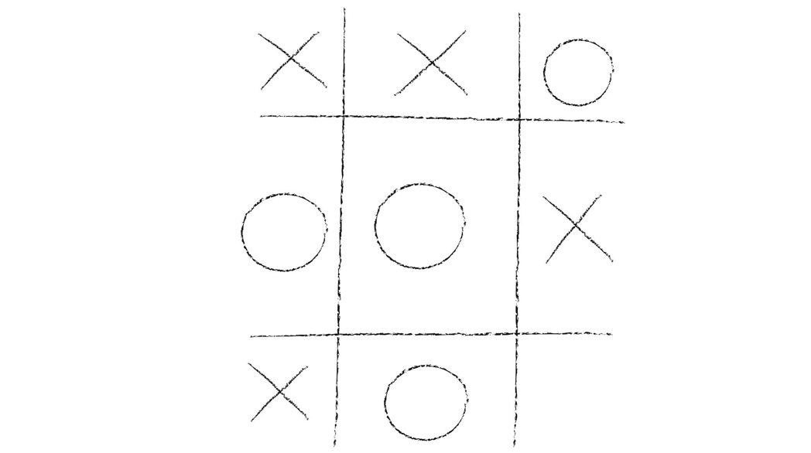

Jugadores: 2
Objetivo: Unir 3 figuras en línea recta (vertical, horizontal o diagonal)
Turno:
- En su turno el jugador escoge una casilla vacía del tablero y coloca su figura en esa casilla.
- Termina su turno cuando acaba de dibujar su figura en la casilla.
- No se puede: cambiar de figura ni colocar una figura en una casilla ya ocupada por cualquier figura.
Final del Juego:
- GANA el jugador que logre poner 3 figuras en una línea (vertical, horizontal o diagonal).
Se tacha con una línea recta las 3 figuras que forman la línea ganadora.
- EMPATE: en el caso de que se ocupen todas las casillas y ningún jugador haya realizado una
línea recta, se declara empate y se juega una nueva partida.